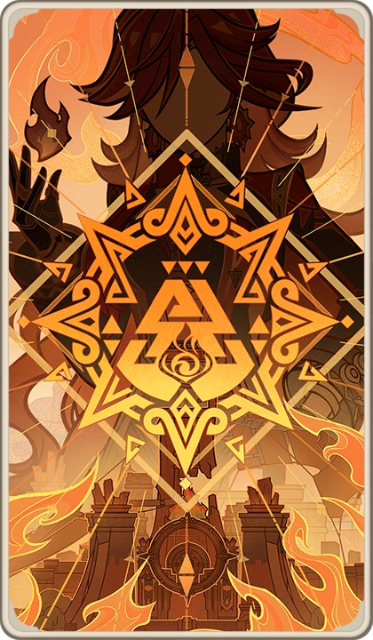
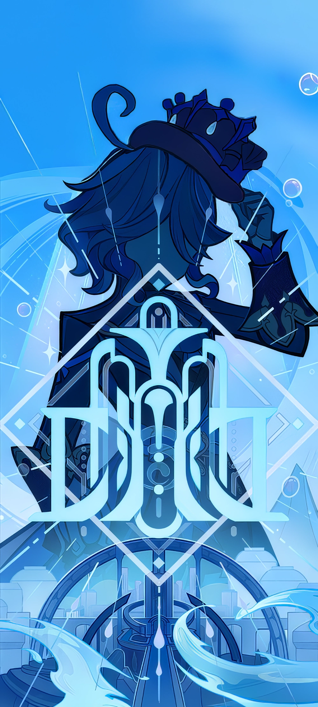
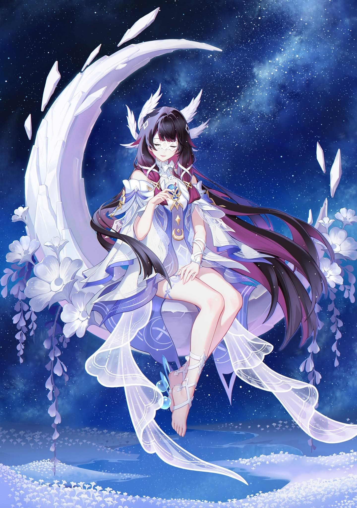
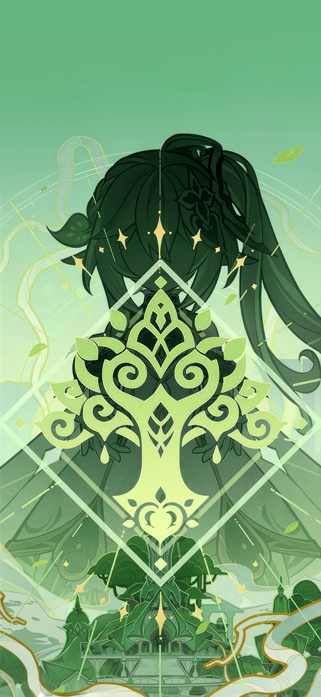
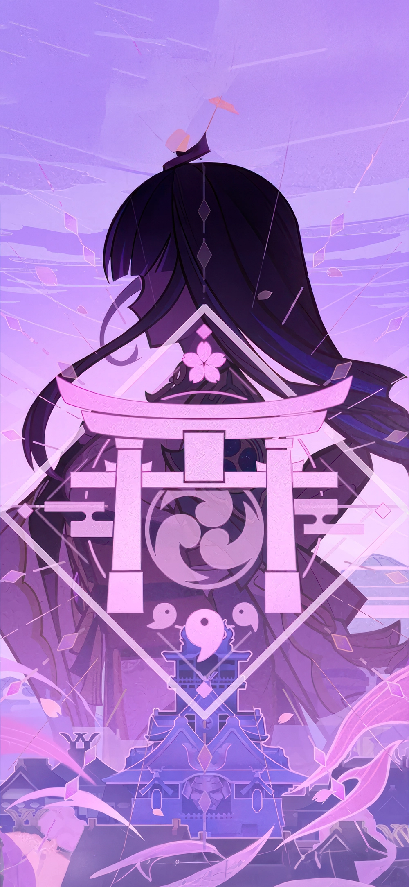
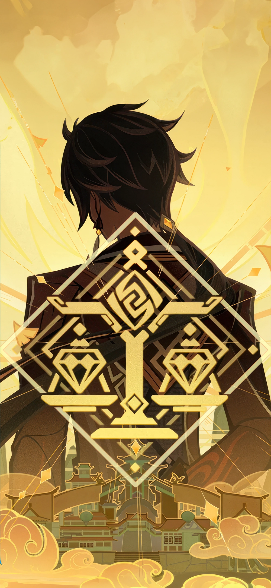
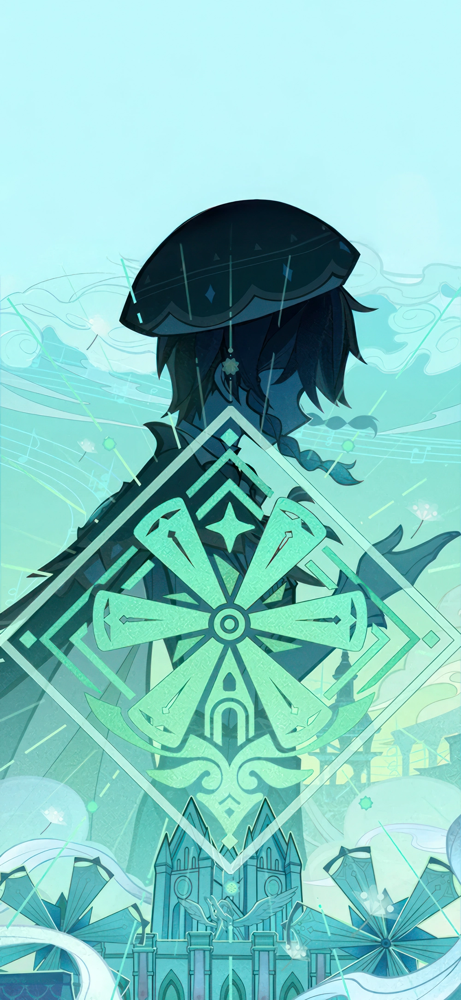

HABILIDADES ELEMENTALES
Pyro
El elemento del fuego
Usualmente, es brindado a aquellos con gran determinación y coraje, así como una ambición que les permita seguir adelante con sus deseos.

Hydro
El elemento del agua
No se sabe mucho del mismo, pero se sabe que la Visión Hydro se brinda a aquellos con un fuerte sentido de la justicia o la lealtad.

Cryo
El elemento del hielo
Se desconoce mucho del mismo, sin embargo, sabemos que es otorgado a las personas solitarias o quienes tengan una gran aflicción consigo.

Dendro
El elemento del naturaleza
Al ser un aspecto de la Diosa de la Sabiduría, está intrínsecamente conectado al conocimiento y la información. Por tanto, es brindado a aquellos deseosos de entender el mundo y eruditos de gran conocimiento.

Electro
El elemento del trueno
Correlacionado con el concepto de Eternidad, es brindado a aquellos que persisten en sus ideales y ambiciones.

Geo
El elemento del terrenal
A diferencia del resto, este podría considerarse como un elemento "sólido" que forma la tierra y los minerales, posiblemente extendiéndose a las estrellas. Quienes reciben una Visión Geo son personas con una voluntad férrea y nobleza incomparables.

Anemo
El elemento del aire
Asociado con la libertad y el tiempo mismo. Quienes reciben una Visión Anemo son personas con un espíritu libre y con la voluntad para luchar por su libre albedrío.
